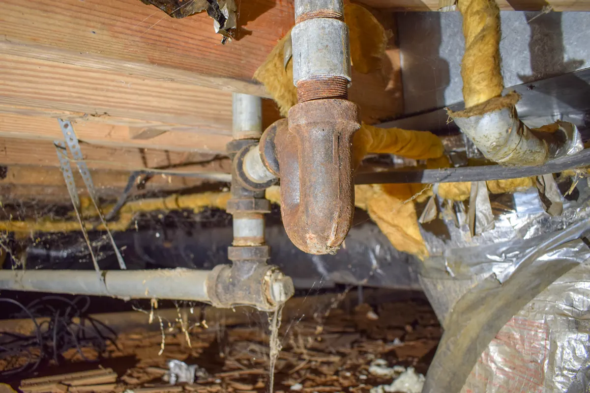

If your home was built before the 1970s, there is a strong chance that cast iron pipes are quietly running beneath your floors, inside your walls, and throughout your drain system. For decades, cast iron was considered the gold standard of residential plumbing — rugged, heavy-duty, and built to outlast nearly everything else in the home. But time has a way of revealing the limits of even the toughest materials, and aging cast iron plumbing is one of the most challenging systems any plumber — or homeowner — will ever have to deal with.

At Angle Stop Plumbing, we have the experience, the tools, and the expertise to help homeowners navigate the complex and often unpredictable world of cast iron plumbing repair and replacement. Whether your system is showing early warning signs or has already reached the point of failure, our team is here to assess the situation honestly, develop a practical plan, and deliver professional results that protect your home for years to come.
What Is Cast Iron Plumbing and Where Did It Come From?
Cast iron plumbing was the dominant material used in residential drain, waste, and vent systems from the late 1800s through most of the twentieth century. Prized for its strength, noise-dampening qualities, and ability to handle high volumes of wastewater, cast iron was installed in millions of American homes and remained a popular choice well into the 1980s.
If your home was built during that era, you almost certainly have cast iron drain lines running through it. At the time of installation, those pipes were an investment in quality. Decades later, they have become one of the most difficult and demanding plumbing challenges a homeowner can face.
Why Old Cast Iron Plumbing Is So Difficult to Work With
1. Progressive Corrosion and Deterioration from the Inside Out
Cast iron is an iron-based material — and iron corrodes. Over time, the interior walls of cast iron pipes develop layers of rust, mineral scale, and organic buildup that gradually restrict water flow and weaken the pipe structure. The deterioration happens slowly, silently, and almost entirely out of sight. By the time visible symptoms appear on the surface of your home, the damage inside the pipe is often already extensive.
What makes this especially challenging for plumbing professionals is the fragility of heavily corroded cast iron. A pipe section that appears intact from the outside can crumble or fracture the moment it is disturbed. Working on aged cast iron requires an extremely careful, measured approach — aggressive handling can turn a localized repair into a much larger and more costly problem very quickly.
2. Enormous Weight and Difficult Access
Cast iron pipes are among the heaviest materials ever used in residential plumbing. A single ten-foot section of four-inch cast iron drainpipe can weigh upward of 40 to 50 pounds — and that weight adds up fast across an entire drain system. Removing, repositioning, or replacing sections of cast iron requires physical strength, proper lifting equipment, and a team experienced in safely managing heavy pipe in tight, confined spaces.
In older homes, cast iron lines frequently run through crawl spaces, beneath concrete slabs, inside narrow wall cavities, and across basement ceilings — all environments where the combination of weight, age, and limited access makes every repair significantly more demanding than working with modern lightweight pipe materials.
3. Challenging Joints and Outdated Connections
Traditional cast iron pipes were joined using a method known as lead and oakum — a labor-intensive process in which oakum fiber was packed into the pipe joint and then sealed with molten lead poured directly into the hub. While this method produced a dependable seal for its era, those same joints become a serious obstacle during modern repair and replacement work.
Cutting through lead-sealed hubs requires specialized tools and careful technique. Connecting contemporary PVC or ABS piping to existing cast iron requires proper transition fittings and a thorough understanding of how the two materials behave differently under pressure, temperature fluctuation, and structural movement. Improper transitions are a common source of leaks and long-term failure when this work is not done correctly.
4. Hidden Damage Beneath Floors and Concrete Slabs
In many older homes, cast iron drain lines run directly beneath concrete slab foundations or under finished flooring with no easy access point. When these underground lines fail — whether from corrosion, root intrusion, or joint separation — locating the exact problem without the right diagnostic equipment requires tearing up large sections of flooring, landscaping, or foundation material.
Even after the damaged section is identified, accessing and repairing cast iron beneath a slab typically requires breaking through concrete — a disruptive, labor-intensive process that must be carefully planned and precisely executed to avoid further damage to the structure or surrounding pipe sections.
5. Tree Root Intrusion
The joints of older cast iron drain lines — particularly those buried underground — are highly vulnerable to tree root intrusion. As roots naturally seek out moisture, they find their way into small gaps and hairline cracks at pipe joints and grow aggressively inside the line over time. Once established, roots can cause complete blockages, crack the pipe walls from within, and create damage that extends far beyond the original point of entry.
Clearing root intrusion from aging cast iron is a delicate process. Pipe walls already weakened by years of corrosion can fracture or collapse under the pressure of standard drain clearing methods. Experienced judgment is essential to avoid turning a root blockage into a full pipe failure.
6. Code Compliance and Permitting Complexities
Repairing or replacing cast iron plumbing in an older home frequently triggers modern plumbing code requirements that did not exist when the original system was installed. Updated venting configurations, approved pipe materials, required cleanout access points, and inspection processes can all become part of a cast iron repair or replacement project — adding layers of complexity that go well beyond simply swapping out old pipe for new.
Navigating permits, scheduling inspections, and ensuring full code compliance while working within the constraints of an aged home structure requires a licensed professional who understands both current local plumbing codes and the unique challenges that older construction presents.
7. Potential Presence of Hazardous Materials
In some older homes, cast iron pipes — especially those associated with steam heating or hot water systems — were wrapped or insulated with materials that may contain asbestos. Before repair or replacement work can safely begin, the potential presence of hazardous materials must be properly identified and addressed. This adds a critical layer of caution and responsibility to what is already a technically demanding repair environment.
Warning Signs That Your Cast Iron Plumbing May Be Failing
Many homeowners discover cast iron plumbing problems only after they have escalated into significant damage. Recognizing the early warning signs can help you act before a manageable repair becomes a major and expensive disaster.
Watch for these indicators in your older home:
- Slow drains or gurgling sounds throughout multiple fixtures
- Recurring drain clogs that keep returning despite clearing
- Persistent sewage or sulfur odors inside or near your home
- Water stains, discoloration, or soft spots on ceilings, walls, or floors
- Cracks, moisture, or wet areas near your foundation or concrete slab
- Unusually green or lush patches of grass in the yard — a common sign of an underground sewer leak
- Visible rust, cracks, or deterioration on any exposed cast iron pipe sections
- Increased pest or rodent activity near plumbing areas — pests often enter through compromised pipe joints and sewer lines
If any of these warning signs are present in your home, having your cast iron plumbing system professionally evaluated as soon as possible is one of the most important steps you can take to protect your property.
The Risks of Ignoring Aging Cast Iron Plumbing
Delaying repairs on a failing cast iron plumbing system is a risk that grows more costly with every passing month. What begins as a slow drain or an occasional odor can progress into:
- Sewage backups into living spaces
- Structural water damage to floors, walls, and foundation
- Mold and mildew growth from hidden moisture
- Compromised indoor air quality from sewer gas exposure
- Significant excavation costs when underground lines fail completely
- Damage to surrounding plumbing components caused by a collapsing line
The longer aging cast iron goes without professional attention, the fewer options remain — and the more expensive those options tend to be. Early intervention is almost always the more affordable and less disruptive path forward.
How Angle Stop Plumbing Helps You Navigate Cast Iron Plumbing Challenges
At Angle Stop Plumbing, we understand that cast iron plumbing repair is not a job for the inexperienced. It demands technical knowledge, specialized equipment, and the kind of careful, methodical approach that only comes from working with these systems firsthand.
Here is how we help homeowners through every stage of the process.
Thorough Professional Inspection and Diagnosis
Before any repair work begins, Angle Stop Plumbing conducts a comprehensive inspection of your cast iron plumbing system. Using professional-grade sewer cameras and pipe inspection technology, we can identify the precise location and extent of damage without unnecessary disruption to your home. You will have a clear, honest picture of what is happening inside your pipes — and a detailed plan for addressing it — before a single tool is raised.
Expert Repair and Targeted Section Replacement
Not every cast iron plumbing issue requires a full system replacement. When localized damage is identified, Angle Stop Plumbing can perform targeted section repairs using approved methods and proper transition fittings that integrate reliably with the rest of your existing system. We work carefully and methodically to minimize disruption while delivering repairs that are built to last.
Full Cast Iron System Replacement
When a cast iron plumbing system has deteriorated beyond the point where repairs are practical or cost-effective, Angle Stop Plumbing provides complete system replacement services. We remove aging cast iron infrastructure and install modern, code-compliant piping systems designed to serve your home reliably for decades to come — with significantly less maintenance and none of the vulnerabilities that come with aging cast iron.
Trenchless Repair Solutions
In many situations, Angle Stop Plumbing can offer trenchless pipe repair options that address cast iron drain line damage without requiring extensive excavation, slab breaking, or floor demolition. Trenchless methods can dramatically reduce the cost, timeline, and disruption associated with underground cast iron repairs — making the process far more manageable for homeowners.
Transparent Communication and Honest Pricing
Cast iron plumbing repairs can feel overwhelming in scope and uncertain in cost. Angle Stop Plumbing is committed to clear, honest communication at every step. We explain exactly what we find, precisely what needs to be done, and what the cost will be — so you can make informed decisions about your home without surprises along the way.
Flexible Payment Options
We understand that major plumbing repairs represent a significant financial investment. Angle Stop Plumbing offers flexible payment options to help homeowners manage the cost of cast iron plumbing repairs without unnecessary financial strain.
Why Middle Tennessee Homeowners Trust Angle Stop Plumbing
Choosing the right plumbing company for a cast iron repair or replacement project is one of the most important decisions an older homeowner can make. Angle Stop Plumbing brings the combination of technical expertise, professional equipment, honest service, and genuine care for every customer that a job this demanding requires.
We do not guess. We do not cut corners. And we do not walk away from a job until it is done right.
When your older home's cast iron plumbing system needs professional attention, Angle Stop Plumbing is the team Middle Tennessee homeowners trust to navigate the complexity, manage the process, and deliver results that protect the home and the family inside it.
Do Not Wait Until Aging Cast Iron Plumbing Puts Your Home at Risk
Old cast iron plumbing does not improve with age. If your home is showing any of the warning signs of cast iron pipe failure — or if you simply know your older home has never had its plumbing system professionally evaluated — now is the time to act.
Angle Stop Plumbing is here to help you understand your options, develop a practical and cost-effective plan, and deliver the professional plumbing service your home deserves.
📞 Call Angle Stop Plumbing today and let our experienced team help you navigate the challenges of aging cast iron plumbing — with the expertise, honesty, and care your home has been waiting for.